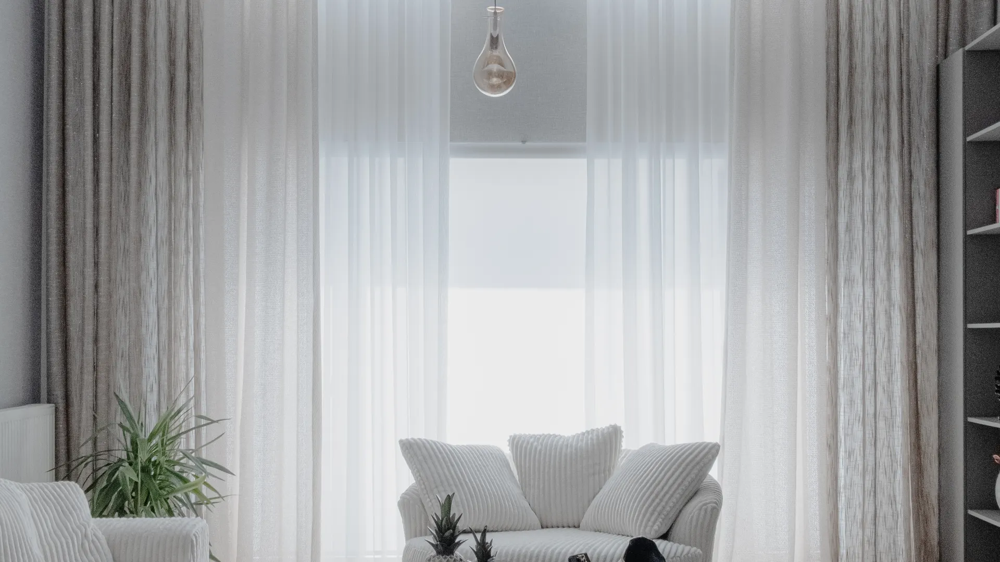
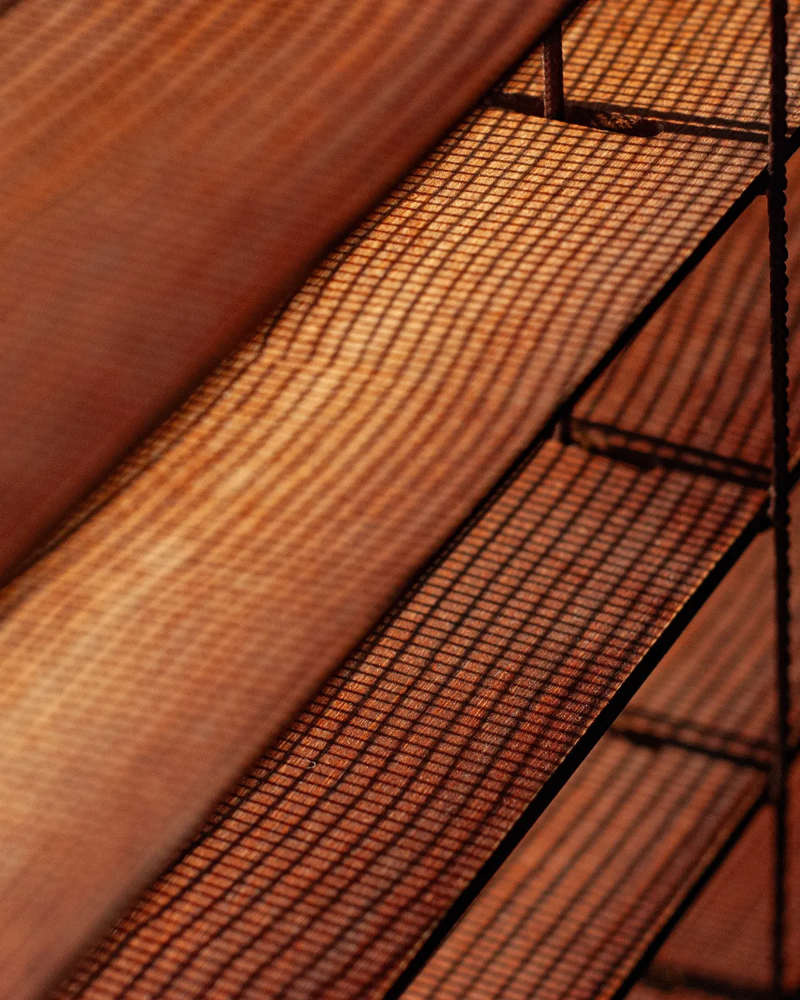
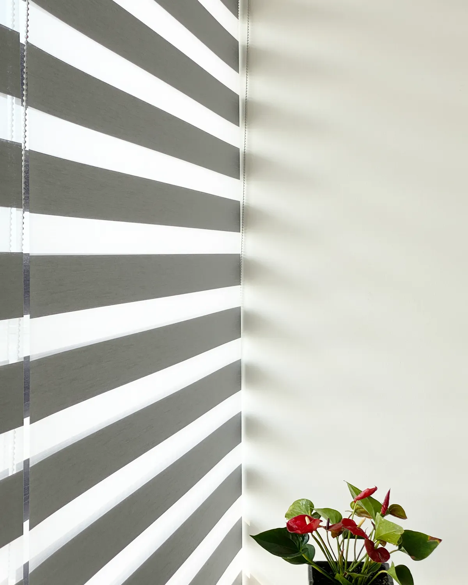
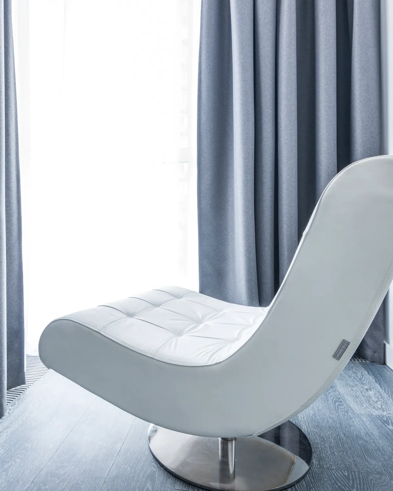
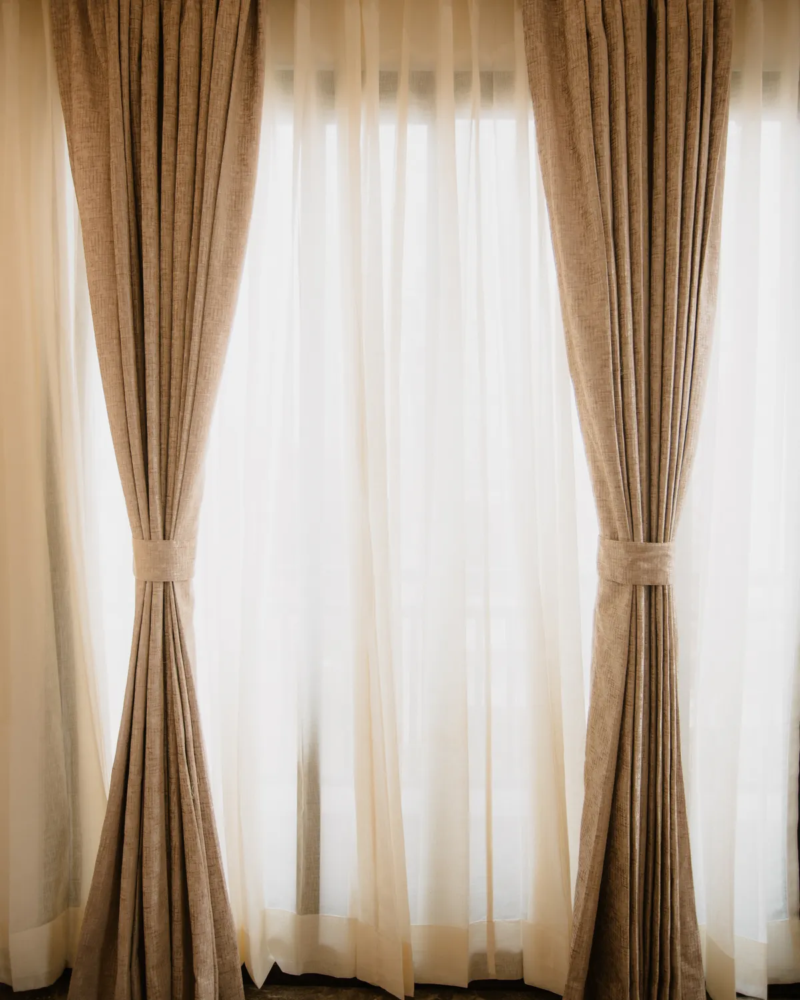
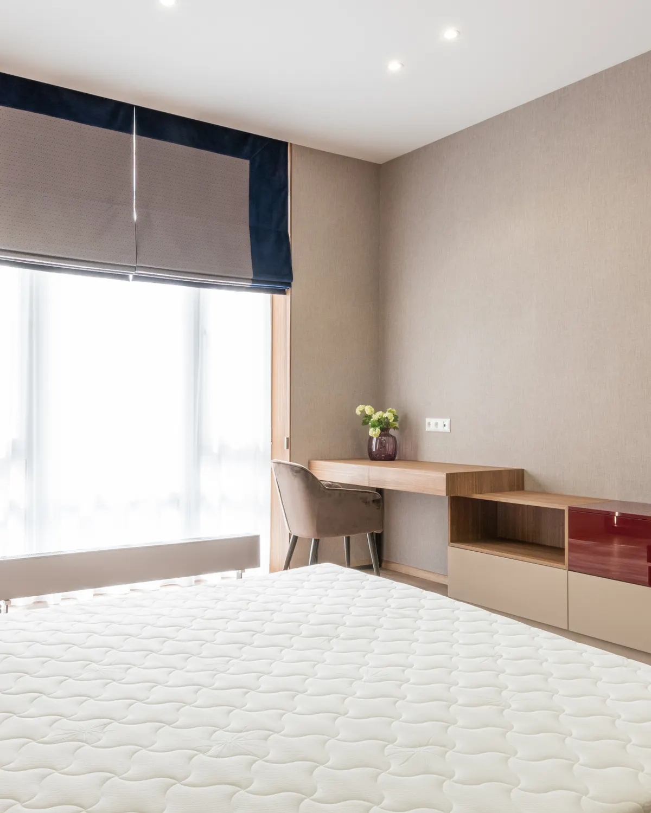
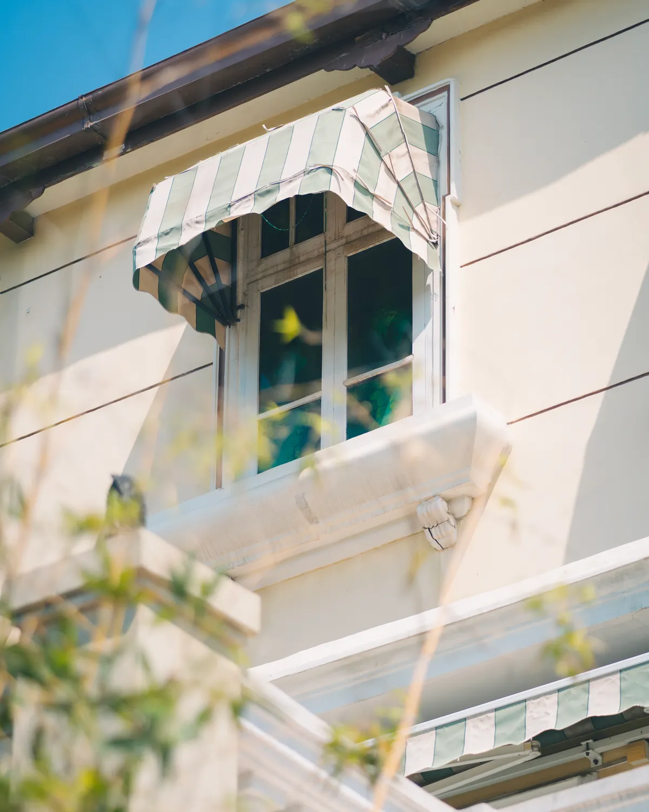
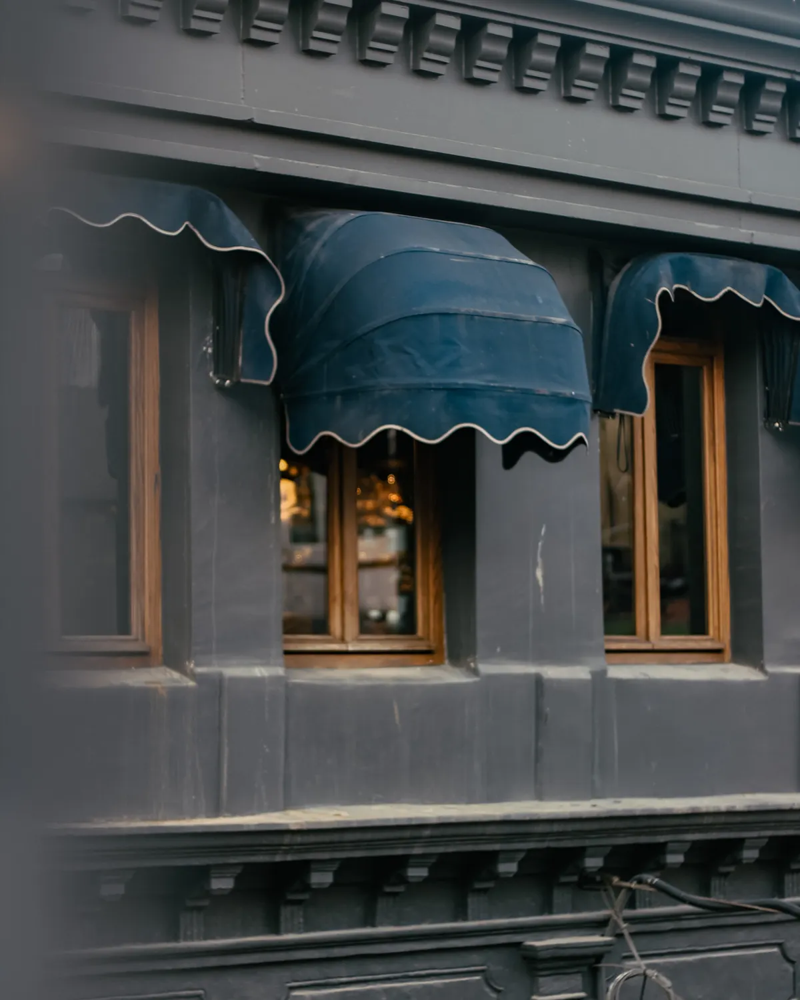
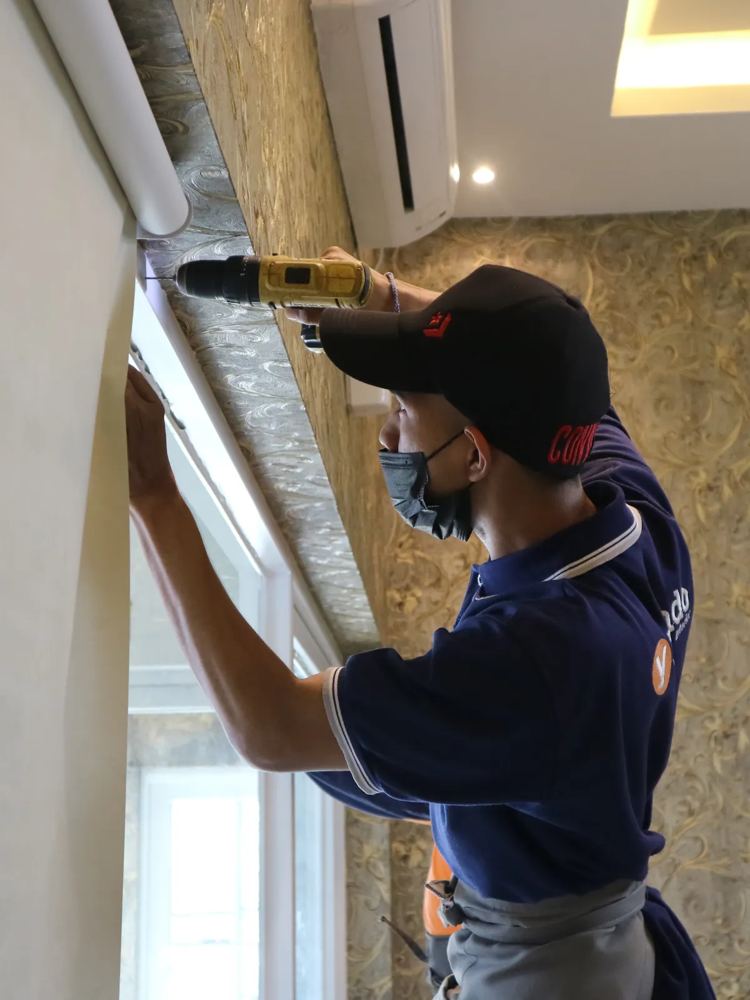

01
Blackout arriba, voile abajo
El roller queda recogido contra el marco y casi no se ve. Baja de noche y tapa el mismo vano que de día cubre el voile.
$98.000
01 Relato de fotos
La foto queda fija y cambia sola a medida que bajás, con la hora y el paso de luz corriendo arriba. Cada capítulo es una hora real del día y termina en el producto que la resuelve. En otro rubro los capítulos son los pasos del servicio, los ambientes de una propiedad o los módulos de un curso.




07:00Recién amanece
07:00 · Living
El voile deja pasar casi toda la luz y corta la vista desde afuera. Es la capa que se queda puesta todo el día.
12:00 · Cocina y living
La trama del sunscreen filtra el sol directo y baja el reflejo en las pantallas. Seguís viendo el patio; de afuera no ven adentro.
18:00 · Comedor
Con las franjas alineadas entra luz; corridas medio paso, se cierra. La misma cortina cambia dos veces por día sin tocar nada más.
23:00 · Dormitorio
Tres capas con alma de PVC: no pasa nada de luz y el ambiente queda más fresco. El que trabaja de noche duerme igual.
02 Recorrido por la foto
Una sola foto real y una lupa que recorre sus puntos sola, ampliando la zona de la propia foto. Cada punto trae su ficha con precio. Si el visitante mueve el mouse, la lupa lo sigue y puede mirar donde quiera. Sirve para el cliente que tiene una foto excelente y pocas más.
01
El roller queda recogido contra el marco y casi no se ve. Baja de noche y tapa el mismo vano que de día cubre el voile.
02
Tamiza la luz sin apagar el ambiente y corta la vista desde la vereda. Se lava en el lavarropas y vuelve al riel.
03
Tela pesada con textura visible: se abre a los costados y enmarca la ventana. Le da peso al ambiente sin oscurecerlo.
04
Un solo riel de aluminio sostiene el voile adelante y el lino atrás. Se corren por separado y quedan alineadas.
03 Vidriera cinética
Dos filas de fotos que corren en sentidos opuestos y aceleran con el scroll, con el nombre de la marca viajando entre medio. Es la más vistosa y la que menos explica, así que va con una franja de CTA debajo. Necesita seis fotos o más.





Cada foto abre su ficha con precio y «Agregar». La fila corre sola y acelera cuando el visitante baja.
Ver el catálogo